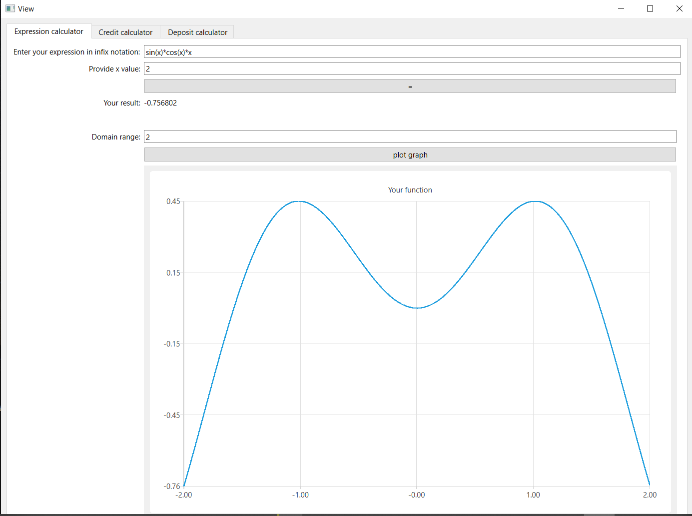

DOCUMENTATION SMARTCALC_V2.0
SMARTCALC_V2.0 - is implementation of extended version of the usual calculator. Calculating arbitrary bracketed arithmetic expressions in infix notation. Plotting a graph of a function given by an expression in infix notation with the variable x.
Part 1. Implementation of SmartCalc v2.0

Arithmetic operators:
- Brackets (a + b)
- Addition a + b
- Subtraction a - b
- Multiplication a * b
- Division a / b
- Power a ^ b
- Modulus a % b
- Unary plus +a
- Unary minus -a
Function:
- cos(x) computes cosine
- sin(x) computes sine
- tan(x) computes tangent
- acos(x) computes arc cosine
- asin(x) computes arc sine
- atan(x) computes arc tangent
- sqrt(x) computes square root
- ln(x) computes natural logarithm
- log(x) computes common logarithm
HOW TO USE:
- All buttons on the screen are active
- To calculate the expression, you need to click on the button "="
- To draw plot, you need to click on the button "PLOT"
- To calculate equation, you need to enter x and click on the button "="
RECOMENDATION:
- Don't enter invalid values.
- Don't plot on a huge scale
Part 2. Bonus. Credit calculator
Provide a special mode "credit calculator"
Function:
- monthly payment
- overpayment on credit
- total payment
HOW TO USE:
- All buttons on the screen are active
- To calculate result you need to enter total credit amount, term, interest rate, type (annuity, differentiated)
RECOMENDATION:
- Don't enter invalid and huge o tiny values.
Part 3. Bonus. Deposit calculator
Provide a special mode "deposit profitability calculator"
Function:
- accrued interest
- tax amount
- deposit amount by the end of the term
HOW TO USE:
- All buttons on the screen are active
- To calculate result you need to enter deposit amount, deposit term, interest rate, tax rate, periodicity of payments
RECOMENDATION:
- Don't enter invalid and huge o tiny values.